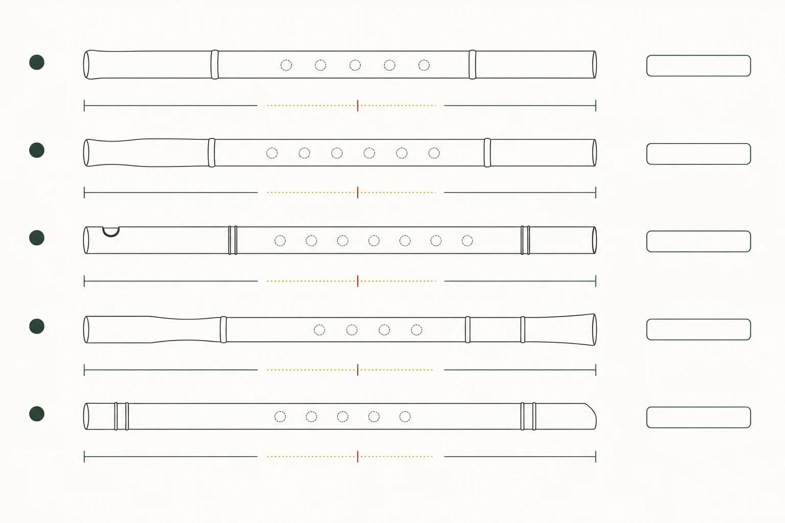

部分核實版權限制
研究領域
樂器分類
從下列子題閱讀相關文章，或查找本領域已收錄的 25 筆來源。各子題的資料深度不同，頁內另列收錄狀況。
L2 · 已核實摘要26 個去重來源11 項核對紀錄
11 項已記錄核對的陳述 · 1146 字正文
本頁已達站內正文門檻，並附核對來源。層級只反映資料覆蓋的程度，並不等於外部專家認證；引用之前，仍請核對原文。來源數目按站內規則去重，相互引用的依賴關係，尚未逐一追查。
已核實專題
1 篇
相關來源
25 筆
部分核實版權限制
研究論文 · 2026
A two-stage deep learning framework for lead instrument recognition in polyphonic music featuring Chinese instruments
PubMed Central
錄音、數碼化及人工智能樂器分類人物與機構曲目、作曲及演奏實踐
未核實開放取用
研究論文 · 2025-05-01
Acoustic Characterization of the Resonator in the Chinese Transverse Flute (dizi)
Xinmeng Luan、Song Wang、Gary Scavone、Zijin Li
聲學與音律樂器分類樂器結構與製作
部分核實只提供書目資料
研究論文 · 2023
Acoustical Analysis of the Chinese Transverse Flute (dizi) Using the Transfer Matrix Method
Xinmeng Luan、Song Wang、Zijin Li、Gary Scavone
聲學與音律錄音、數碼化及人工智能樂器分類樂器結構與製作
部分核實只提供書目資料
部分核實版權限制
部分核實版權限制
部分核實版權限制
學位論文 · 2009
Woodwind doubling on folk, ethnic, and period instruments in film and theater music: case studies and a practical manual
Bret Pimentel
歷史與文化樂器分類曲目、作曲及演奏實踐指法與演奏技法
部分核實版權限制
機構網頁 · 日期未載
Wind Instruments — Chinese Orchestra
Timbre and Orchestration Resource / ACTOR
聲學與音律樂器分類樂器結構與製作曲目、作曲及演奏實踐指法與演奏技法
部分核實版權限制
部分核實版權限制
部分核實版權限制
部分核實版權限制
部分核實版權限制
部分核實版權限制
部分核實版權限制
部分核實版權限制
部分核實版權限制
機構網頁 · 2008-09
Music and Art of China
Department of Asian Art, The Metropolitan Museum of Art
歷史與文化樂器分類
部分核實版權限制
部分核實版權限制
部分核實版權限制
部分核實版權限制
未核實版權限制
未核實版權限制
機構網頁 · 日期未載
Dizi (Chinese transverse bamboo flute)
Vancouver Inter-Cultural Orchestra
聲學與音律樂器分類樂器結構與製作曲目、作曲及演奏實踐指法與演奏技法
部分核實版權限制
本篇視覺示意（非教學圖）
